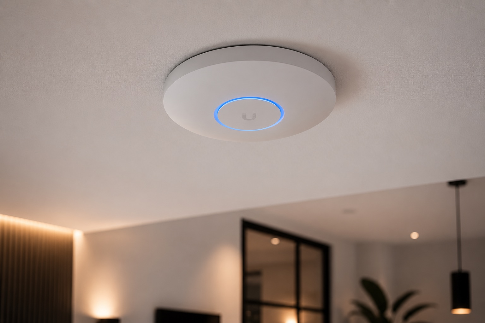

Professionele UniFi wifi-installaties, Synology NAS-setups en bekabelde thuisinfrastructuur. BennIT ontwerpt en installeert een netwerk dat nu en in de toekomst werkt.

Voordat we iets installeren meten we waar het probleem zit. Met professionele wifi-analysetools brengen we de dekking en signaalsterkte in je woning of kantoor in kaart. Zo weten we precies wat de beste oplossing is — en installeren we niets wat niet nodig is.
Mesh-systemen (zoals Eero, TP-Link Deco of UniFi) creëren één naadloos wifi-netwerk door heel je huis of kantoor. Geen aparte "extender"-netwerken meer — één naam, overal volledige snelheid. We installeren en configureren het systeem volledig, inclusief de app en gastnetwerk.
Voor maximale snelheid en stabiliteit is bekabeld netwerk altijd de beste keuze. We leggen CAT6- of CAT6a-bekabeling aan voor werkplekken, smart TV's, gameconsoles en access points. Netjes weggewerkt, professioneel gepatcht.
Professionele netwerken met managed switches, VLAN-segmentatie en een centrale beheerinterface. We installeren en documenteren alles, zodat je netwerk schaalbaar en beheersbaar blijft.
UniFi (van Ubiquiti) is de standaard voor professionele wifi-installaties in hotels, kantoren en bedrijfspanden. Als UniFi access point installateur leveren wij dezelfde bedrijfskwaliteit — zakelijk én privé — voor een eerlijke, betaalbare prijs. Stabiel, snel en centraal te beheren via de UniFi-app. Actief in Diemen, Amsterdam, Amstelveen en Ouder-Amstel.
Een NAS (Network Attached Storage) is een privé-server in je eigen huis of kantoor. Geen maandelijkse cloudkosten, geen data bij grote techbedrijven. Synology is de meest betrouwbare en gebruiksvriendelijke NAS-fabrikant — we installeren en configureren het complete systeem.
We meten je dekking en bespreken wat je écht nodig hebt — vrijblijvend.
Je weet precies wat hardware én installatie kosten. Nooit verrassingen achteraf.
Plus hardware tegen een eerlijke prijs. Netjes weggewerkt en gedocumenteerd.
Bedragen zijn indicaties inclusief hardware en installatie — de definitieve prijs hangt af van je situatie (aantal access points, bekabeling, kabelgoten). Je krijgt altijd een gratis analyse en een heldere offerte voordat we beginnen.
Vraag een gratis wifi-analyse aan →
Als je op bepaalde plekken geen of trage verbinding hebt, streaming hapert of videobellen stokt, is er waarschijnlijk een dekkings- of snelheidsprobleem. We meten dit met een professionele wifi-analysetool.
Een wifi-versterker maakt een apart, zwakker netwerk aan. Een mesh-systeem is één naadloos netwerk waarbij je apparaat altijd verbonden is met het sterkste punt. Mesh is vrijwel altijd de betere keuze.
Ja, inclusief patchkast, switches en wanddozen. We leveren een compleet, netjes geïnstalleerd en gedocumenteerd systeem dat schaalbaar is voor de toekomst.
Voor maximale snelheid en stabiliteit wel — CAT6 ondersteunt tot 10 Gbps. Ideaal als je thuis werkt, gamers in huis hebt of smart home apparaten stabiel wil verbinden.
Consumenten-mesh systemen (Eero, Google Nest, TP-Link Deco) zijn prima voor basis-gebruik. UniFi geeft meer controle, betere performance, netwerksegmentatie via VLAN en is professioneel schaalbaar. Voor wie thuiswerkt, gamed of een groot huis heeft, is het de betere investering op de lange termijn.
Een Synology NAS is je eigen privé-cloud thuis. Automatische back-ups van alle computers, een privé fotoalbum, filmbibliotheek, gedeelde documenten en meer — zonder maandelijkse kosten en zonder dat je data op servers van Google of Apple staat. We installeren en configureren alles voor je.